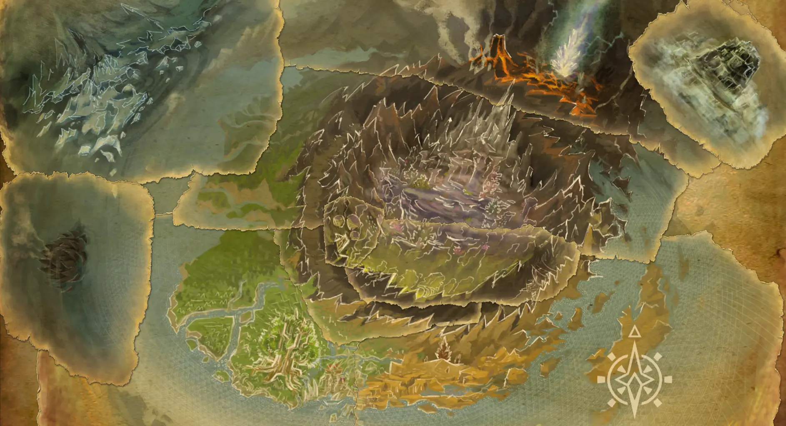
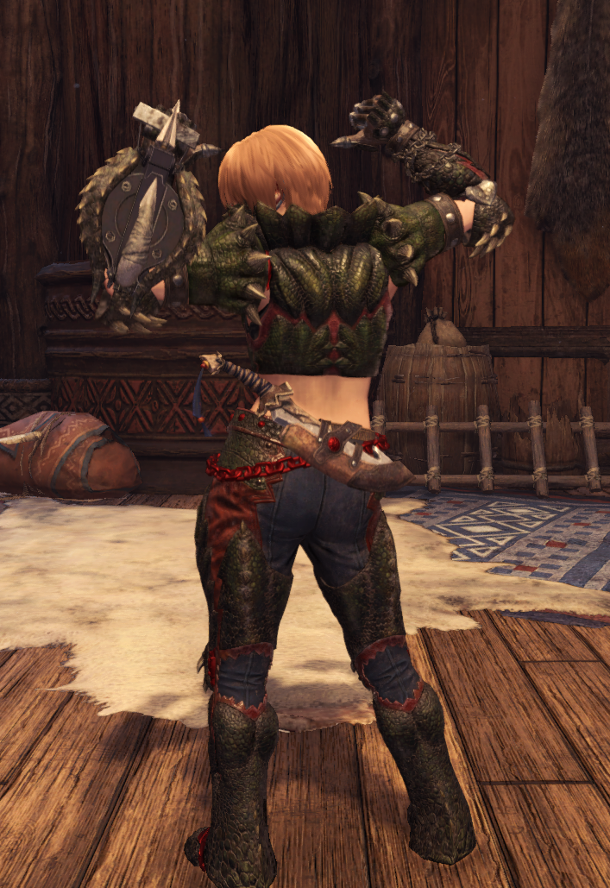
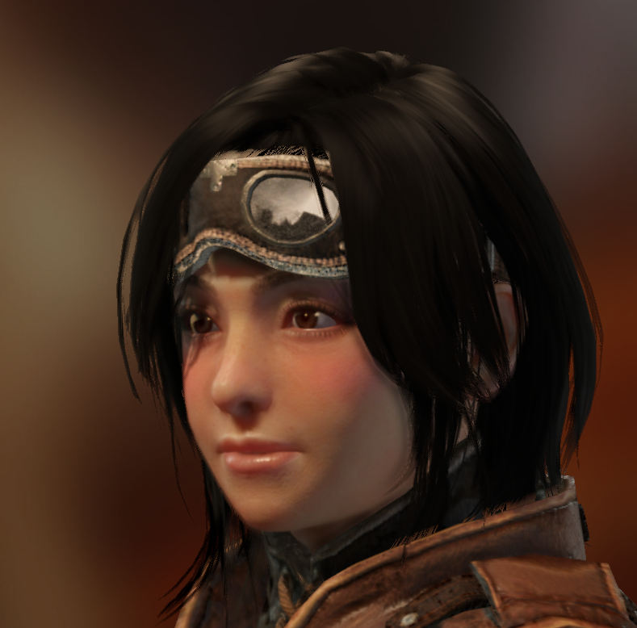
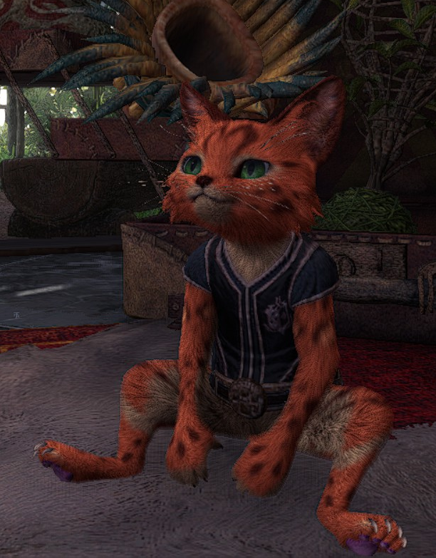
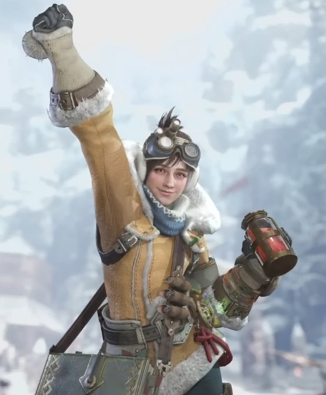
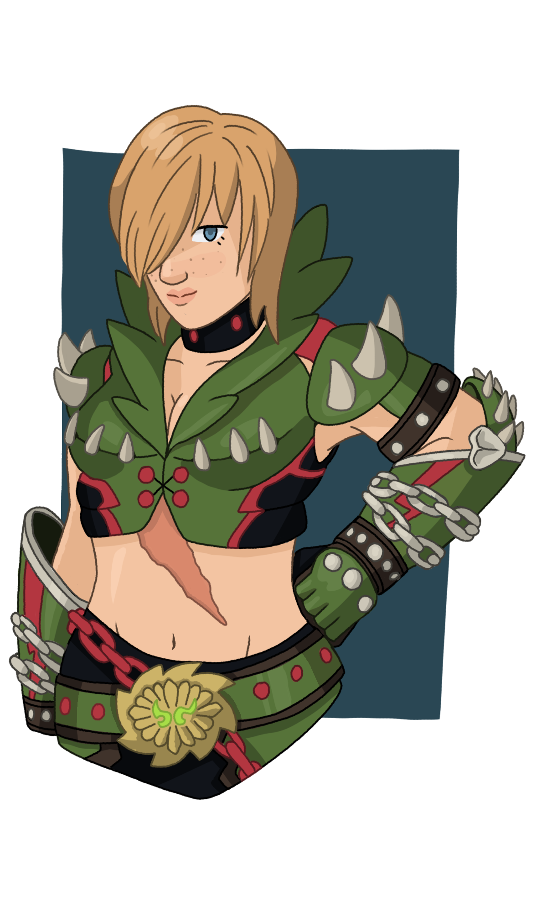
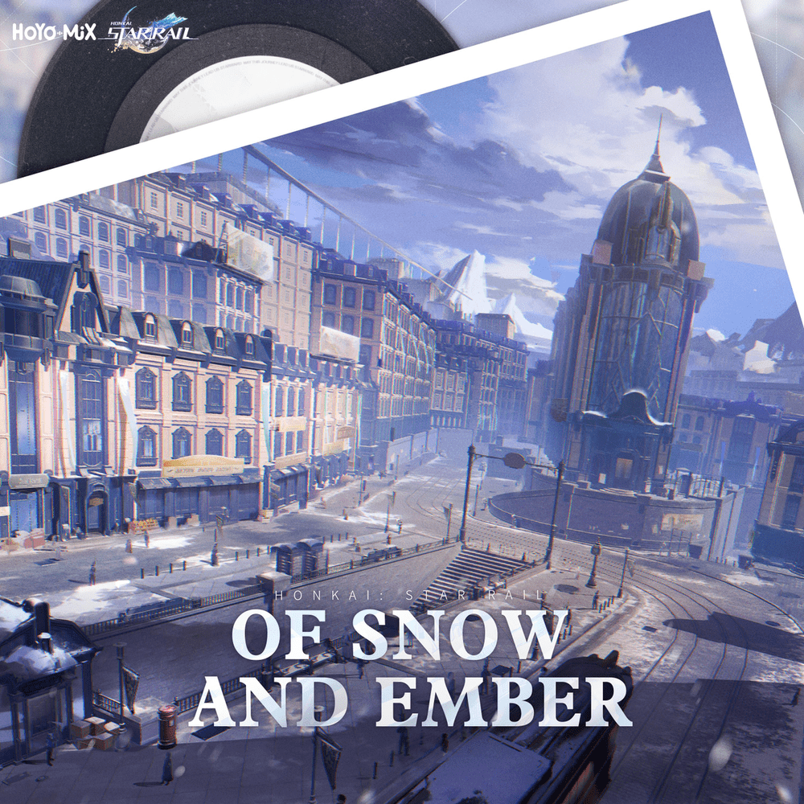

FREYJA IRONHEART
Étoile de Saphir
|
|
|
|
|
|
|
|
|
|
|
|
|
|
|
|

Une étoile qui brûle d'un souffle court.
❖ ----- Armure Principale ----- ❖
|
|
Masque respiratoire Deviljho |
|---|---|
|
|
Cotte courte Vangis |
|
|
Avant-bras Vangis à fronde |
|
|
Boucle Vangis teinte rouge |
|
|
Grèves Vangis |
❖ ----- Apparence physique et personnalité ----- ❖
Portant le titre d'Étoile de Saphir, Freyja est une chasseuse de renom du Nouveau Monde, respectée et admirée par ses pairs. Icône de la Guilde, elle est pourtant décontractée, chaleureuse et approchable : c'est le genre à se faire des amis dans chaque taverne où elle passe. Elle connait à peu près tout le monde à Astera et n'a pas peur de montrer en public son affection pour ses proches. Il n'est pas rare de la trouver à piéger sa pauvre petite sœur dans une étreinte chalereuse contre son gré.
Freyja est reconnaissable à ses cheveux courts roux, un visage rond parsemé de grains de beauté, et une carrure athlétique puissante. Elle arbore fièrement sous son armure en écailles de Deviljho, une ancienne cicatrice à la poitrine. Elle n'en parle cependant jamais, préférant toujours détourner la conversation par une plaisanterie. Très peu de gens en connaissent la véritable origine.
❖ ----- Biographie ----- ❖
Freyja est née dans un village sans histoire, au cœur de la région de Schrade, dans l’Ancien Monde. Elle a perdu ses deux parents à l'âge de quinze ans dans un accident de chasse, et a alors dû élever seule sa petite sœur de six ans, Marna. En grandissant, elle a suivi les traces de ses parents et s’est tournée vers la chasse afin de subvenir aux besoins de sa famille.
Montant rapidement dans les rangs de la Guilde, Freyja se fit d'abord remarquer durant les débuts de sa carrière pour son nom de famille et son sang chaud. Dangereusement impulsive et plus têtue qu’un Kut-Ku, sa force de caractère couplée à une force brute en firent une figure suivie de près par les chasseurs plus expérimentés. Elle apprit beaucoup grâce à eux, faisant preuve de modestie malgré ses défauts.
Une chasse terrible a cependant tout changé au début de sa carrière. Ce qui devait être une simple évacuation de village a tourné au cauchemar lorsque Freyja s’est retrouvée seule face à un Deviljho, tenant tête à la bête pour permettre aux autres de fuir. La situation a empiré lorsqu’un Yian Garuga nichant dans les environs a été réveillé par le combat. Le Wyverne enragé l’a frappée d’un coup de queue, brisant son armure au niveau de la poitrine et laissant ses toxines s’infiltrer profondément dans ses poumons avant de prendre la fuite. Freyja est malgré tout parvenue à abattre le Deviljho, mais au prix fort. L’incident lui a laissé une profonde cicatrice sur le torse et a causé des dégâts pulmonaires irréversibles.
Craignant que la Guilde ne la considère comme un trop grand danger pour continuer à chasser, elle a choisi de cacher son nouveau handicap. Sa jeune sœur, alors en voie pour devenir forgeronne, utilisa les matériaux du Monstres vaincu pour lui confectionner une nouvelle armure, ainsi qu’un masque équipé de filtres et d’herbes spéciales pour soulager sa respiration.
Toujours debout après cet accident, Freyja restait trop talentueuse pour être ignorée. Elle fut sélectionnée par la Guilde pour l’expédition de la Cinquième Flotte vers le Nouveau Monde, ses capacités lui valant une place parmi les chasseurs les plus prometteurs du continent. Elle a mis sa réputation à profit pour faire également embarquer Marna dans l’expédition, afin que celle-ci puisse étudier sous la direction du Forgeron d’Astera.
Dans le Nouveau Monde, Freyja s’est rapidement fait un nom. Avec son Assistante à ses côtés, les deux formèrent un duo renommé qui a perça les mystères longtemps enfouis de nouvelle cette terre. Freyja a fini par recevoir le titre d'Étoile de Saphir pour ses exploits : elle a participé aux deux chasses du Zorah Magdaros, puis est allée jusqu’à terrasser Nergigante, Xeno’Jiiva, Velkhana et Shara Ishvalda. Considérée comme une légende vivante par de nombreux chasseurs du Nouveau Monde, beaucoup de débutants l’admirent et la prennent pour modèle au moment de commencer leur propre parcours.
Malgré tout, le poids des attentes pèse lourdement sur ses épaules. Après plus d'une décennie passée à cacher son handicap, Freyja est persuadée qu’elle ne peut pas se permettre de montrer de faiblesse. Qu’elle doit être irréprochable afin d’être à la hauteur de l’image que les autres se font de l'Étoile de Saphir.
Les rumeurs disent qu’elle aurait affronté et vaincu un Alatreon, voire même le mythique Fatalis, au cours de chasses organisées et dissimulées par la Guilde. Cette théorie est populaire, mais impossible à prouver, tant le regard hanté dans ses yeux décourage toute question trop insistante. Un regard qu’on ne lui voit d’ordinaire que lors des rares annonces signalant la présence d’un Yian Garuga dans les environs.
Malgré tout cela, Freyja commence lentement à prendre du recul par rapport à son rôle de chasseuse active de première ligne. Elle devient peu à peu une mentore pour la jeune génération, une enseignante pour les nouveaux talents qui attirent son attention. Têtue comme toujours, elle demeure profondément attachée à ses responsabilités envers Astera et Seliana, mais l’insistance de Marna ainsi que la relation naissante qu’elle entretient avec son Assistante commencent lentement à lui faire reconsidérer les choses.
❖ ----- Relations -----❖

Marna Ironheart
La petite sœur de Freyja. Les deux sont extrêmement proches, la chasseuse l'élevant depuis son enfance. Marna est une forgeronne timide mais douée, minée par un profond manque de confiance en elle. Malgré tout, Freyja est convaincue de ses talents et refuse toute pièce d'équipement ne venant pas de sa sœur.
Elle le cache souvent, mais Marna s'inquiète sans cesse pour la santé de sa Freyja et veille sur elle de façons qu'elle remarque rarement. Quand elle ne dort pas les nuits où Freyja part en chasse, elle se contente de regarder les étoiles.

Ratio
Un Felyne errant que les Ironheart ont recueilli dans leur enfance. Ratio est une présence enthousiaste, la mascotte officieuse de l'équipe. Même s’il n’a jamais eu beaucoup d’intérêt pour la chasse, il a choisi de devenir le Palico de Freyja afin d’apaiser les peurs et les inquiétudes de Marna.
Formé à l’origine uniquement comme soigneur, les conditions du Nouveau Monde et les dommages pulmonaires de Freyja l’ont poussé à adopter un rôle plus défensif : il attire l’attention des monstres loin de Freyja lorsqu’elle a besoin de reprendre son souffle, lui permettant d’attaquer avec férocité sans avoir à se soucier de son endurance.

Assistante de la Guilde
La plus proche amie et confidente de Freyja. L'Assistante est une jeune femme envoyée par la Guilde pour l'assister, transmettre les quêtes et superviser ses exploits. C'est une personne vive et curieuse, profondément dévouée à sa partenaire.
Avec le temps, elle et Freyja sont devenues inséparables en affrontant ensemble tout ce que le Nouveau Monde avait à leur proposer. Elle appris finalement la vérité sur l'ancienne blessure et les problèmes pulmonaires de sa partenaire, devenant la seule personne au courant en dehors de Marna et Ratio. Au grand soulagement de Freyja, elle a accepté de garder son secret, comprenant ses craintes vis-à-vis de la Guilde.
Freyja, elle, Marna et Ratio sont un quatuor familier, qu’on retrouve souvent autour de la même table de taverne à Astera lors des soirées animées.
❖ ----- Galerie ----- ❖

Artwork par Santithur
Anecdotes
- Sans son masque, les dommages pulmonaires de Freyja deviennent évidents dès qu’elle fournit un effort : souffle court, vertiges, oppression dans la poitrine et violentes quintes de toux capables de la plier en deux. Le masque atténue grandement ces symptômes, même s’ils peuvent encore se manifester dans des environnements extrêmes, comme une chaleur ou un froid intense, ou encore dans l’effluvium du Rotten Vale.
- Malgré son handicap, Freyja est forte. Plus forte que le chasseur moyen. Elle s’entraîne souvent avec l’Amiral, et les chasseurs aiment spéculer en disant qu’elle pourrait soulever des rochers, voire tenir tête à un Rajang au bras de fer si jamais elle se sentait assez téméraire pour tenter l’expérience.
- Freyja porte son armure et sa cicatrice avec fierté, comme le témoignage de tout ce qu’elle a surmonté. Malgré cela, elle reste toujours tendue lorsqu’elle fait face à un Deviljho, ou pire encore, à des Yian Garuga. Ces bêtes sont ses démons personnels.
- Freyja et sa sœur partagent le même défaut : ce sont toutes deux des accrocs au travail. Heureusement, chacune veille discrètement sur l’autre. Lorsque les deux se poussent trop loin en même temps, c’est souvent l'Assistante qui intervient pour leur imposer une pause.
- Freyja est excessivement protectrice envers ceux qu’elle considère comme sa famille. Elle ne l’avouera jamais à voix haute, mais elle est profondément soulagée que Marna ait choisi la forge plutôt que de suivre ses traces — et celles de leurs parents — en devenant chasseuse.
- Le partenariat entre Freyja et son Assistante peut parfois devenir frustrant, car l'Étoile de Saphir a la mauvaise habitude de minimiser ses propres blessures. La jeune femme doit souvent se tourner vers Marna pour demander conseil sur la meilleure façon de forcer sa sœur à ralentir, et les deux sont devenues très proches pour cette raison.
- Ratio et l'Assistante sont eux aussi proches. Il n’est pas rare de les trouver ensemble dans les cuisines d’Astera, le Felyne s’empressant de goûter avec enthousiasme à chacune de ses nouvelles inventions culinaires.
- À la taverne, Freyja flirte sans aucune honte avec son Assistante. Cette dernière joue toujours le rôle de la partenaire exaspérée, la repoussant doucement avec un sourire et une plaisanterie, même si le rose sur ses joues la trahit souvent. Et si quelqu’un remarque la façon dont leurs doigts s’entrelacent lorsqu’elles s’éloignent pour regarder le soleil se coucher sur Astera, il est assez poli pour ne rien dire.
